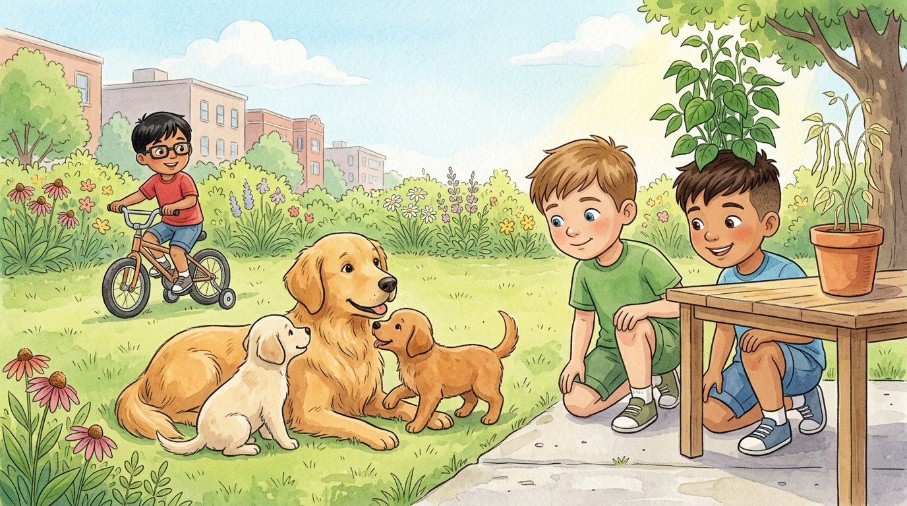

3er grado · Ciencias · 3-LS3-1 · 3-LS3-2
Los cachorros de Luna
Un cuento sobre por qué nos parecemos a nuestra familia.
Palabras de ciencia que vas a aprender
Toca una palabra verde para ver qué significa.
El cuento
Cuando Israel fue a visitar a Alejandro en Texas, la perra Luna acababa de tener tres cachorros. Los primos se sentaron en el pasto para mirarlos.
—Se parecen a su mamá —dijo Israel—: tienen el pelo dorado, las orejas caídas y la cola larga. Esas son que los cachorros de sus : su mamá y su papá.
Una característica que se hereda se llama heredado. —Como tus ojos azules —le dijo Israel a Alejandro—. Los heredaste de tu familia.
Pero los cachorros no eran idénticos. Uno era más claro, otro tenía una mancha blanca en el pecho y otro era un poco más grande. —Aunque son hermanos, cada uno es distinto. Eso se llama —explicó la tía de Alejandro.
En la mesa del patio había dos macetas de frijol que habían sembrado el mismo día con semillas iguales. Una estaba al sol: era alta y verde. La otra había quedado a la sombra: era delgada y pálida.
—Las semillas eran iguales —dijo Alejandro—, pero el las cambió: la luz, el agua y el lugar donde crecen también influyen en cómo son.
En eso pasó Adrián en su bicicleta con rueditas, muy orgulloso. —¿Montar en bicicleta también se hereda? —preguntó. Los primos se rieron.
—No —respondió Israel—. Montar en bicicleta, leer o nadar no se heredan: se con práctica. Una cicatriz en la rodilla tampoco se hereda: viene de lo que nos pasa.
Esa noche, Alejandro hizo una tabla en su cuaderno con dos columnas: «Lo heredé» y «Lo aprendí o me pasó». En la primera escribió: ojos azules, pelo castaño claro. En la segunda: andar en bicicleta, nadar y un raspón en el codo.
Glosario
- rasgo
- Una característica de un ser vivo. Los rasgos heredados pasan de los padres a los hijos.
- heredar
- Recibir características de los padres, como el color de los ojos o la forma de las orejas.
- progenitores
- La mamá y el papá de un ser vivo.
- variación
- Las diferencias que hay entre seres vivos de la misma clase, incluso entre hermanos.
- ambiente
- Todo lo que rodea a un ser vivo: la luz, el agua, la comida y el lugar donde vive.
- aprender
- Llegar a saber hacer algo con estudio o práctica.
- característica
- Algo que distingue a un ser vivo o a una cosa, como su color, su tamaño o su forma.
Preguntas
Elige la respuesta correcta. Si te equivocas, el cuento te muestra dónde está la respuesta.
-
Pregunta A. ¿De quién heredan los cachorros sus características?
Los cachorros heredan sus características de sus progenitores, su mamá y su papá.
-
Pregunta B. ¿Cómo se llama una característica que se hereda?
Una característica que se hereda se llama rasgo heredado.
-
Pregunta C. ¿Por qué los cachorros no son idénticos?
Aunque son hermanos, cada uno es distinto: eso se llama variación.
-
Pregunta D. ¿Por qué una planta de frijol creció pálida?
Las semillas eran iguales, pero el ambiente, como la luz, las cambió.
-
Pregunta E. ¿Se hereda montar en bicicleta?
Montar en bicicleta, leer o nadar no se heredan: se aprenden con práctica.